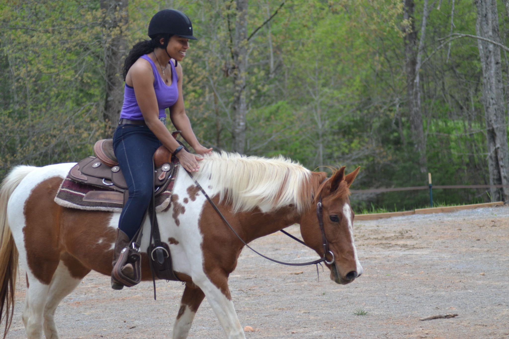
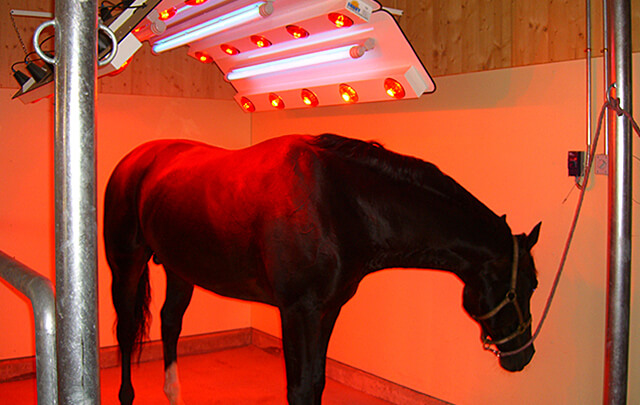

Servicii
Lecții de călărie

- lecții de călărie pentru diferite niveluri de pregătire, de la începători la avansaţi
- lecțiile practice de călărie sunt însoțite de lecții teoretice, cursuri, cu vizionari de filme și diapozitive pe teme ecvestre
Organizări de concursuri
- concursuri de sărituri peste obstacole și dresaj
- concursuri oficiale naționale și cu participare internațională
- concursuri-eveniment monden
Pensiune pentru Cai

- alimentaţia de baza lucernă (sau fân, opţional) şi ovăz; la cerere, pot fi adăugate şi suplimente nutritive şi alimentare
- igiena calului și curățarea boxei acestuia
- acces nelimitat la apă, prin adăpătoare automate, cu încălzire în timpul iernilor geroase
- acces la solarii pentru uscare după duş sau antrenament
- acces la manejurile acoperite şi terenul exterior, cu folosirea materialelor de obstacole sau dresaj aferente